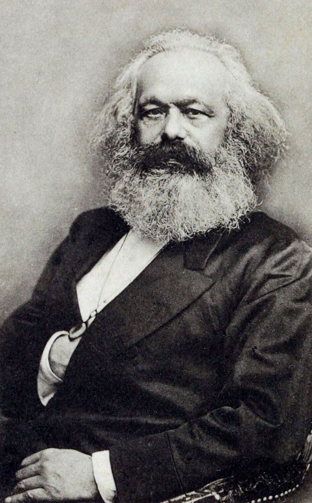

Here is a brief summary of the history of communism:
Communism, originally created by Karl Max, first launched from Lenin’s October Revolution and spread to China with Mao
Zedong’s rise to power and to Cuba, with Fidel Castro’s takeover. It was the ideology behind one side of the Cold War and saw a
symbolic decline with the fall of the Berlin Wall. However, today a number of countries still remain under the communist rule.

Timeline of Communism
February 21, 1848: German economist and philosopher Karl Marx and Friedrich Engels published "The Communist Manifesto", calling for a
revolution against capitalism, with its motto: “Workers of the world, unite!”
November 7, 1917: With Vladimir Lenin at the helm, the Bolsheviks seized power during Russia’s October Revolution and established the
first ever communist government. Later that month, the Socialist Revolutionaries defeated the Bolsheviks in an election, but despite
his promises of “bread, land and peace,” Lenin uses military force to take power. It was duringthis time that the Red Terror
prisoner-of-war labor camps and other police state tactics were finally established.
July 1, 1921: Inspired by the famous Russian Revolution, the new Communist Party of China was formed.
January 21, 1924: Lenin died at age 54 of a stroke. Joseph Stalin, who had served as Lenin’s general secretary, officially took
over the rule of the Soviet Union until his death in 1953 from a brain hemorrhage. He industrialized the country through a
state-controlled economy, which later led to famine.
1940 to 1979: Communism was established by force in many other countries all sround the world. They include Estonia, Latvia, Lithuania,
Yugoslavia, Poland, North Korea, Albania, Bulgaria, Romania, Czechoslovakia, East Germany, Hungary, China, Tibet, North Vietnam, Guinea,
Cuba, Yemen, Kenya, Sudan, Congo, Burma, Angola, Benin, Cape Verde, Laos, Kampuchea, Madagascar, Mozambique, South Vietnam, Somalia,
Seychelles, Afghanistan, Grenada, Nicaragua and many more.
May 9, 1945: The U.S.S.R. officially declared victory over Nazi Germany in World War II. With Japan’s defeat, Korea becomes divided
into the communist North, occupied by the Soviet Union, and the South.
March 12, 1947: President Harry S. Truman addressed Congress in what came to be known as the Truman Doctrine, calling for the
containment of communism, and later, leading to U.S. entry into wars in Vietnam and Korea to provide defense from communist takeovers. The
doctrine becomes the basis for America’s Cold War policy.
July 5, 1950: Leading United Nations forces, the first U.S. troops engaged in the Korean War, after communist North Korea invaded South Korea
with the intent of creating a unified communist state. The war lasted until July 27, 1953, with North Korea, China and the United Nations
signing an armistice agreement.
January 1, 1959: Fidel Castro overthrows the corrupt Fulgencio Batista regime, and Cuba officially becomes a Communist state.
June 4, 1989: After weeks of protests, the Communist Chinese government finally sent in its military to fire on demonstrators calling for
democracy in Beijing’s Tiananmen Square. The bloody and violent massacre ended in hundreds to thousands of deaths.
April 25, 1976: Following the fall of Saigon at the end of the Vietnam War, South Vietnam’s capital was seized by communist forces. A few
months later, in July,the nation was reunified as the Socialist Republic of Vietnam under the communist rule.
November 9, 1989: The Berlin Wall—that separated communist East Berlin from democratic West Berlin for nearly 30 years—falls. The years
1989-1990 was the collapse of all the communist regimes in Czechoslovakia, Hungary, Bulgaria, Poland, Romania, Benin, Mozambique, Nicaragua and
Yemen.
December 25, 1991: With the resignation of Mikhail Gorbachev, the Soviet Union was dissolved. New Russian President Boris Yeltsin banned the
Communist Party. Communism soon also ended in Afghanistan, Albania, Angola, Congo, Kenya, Yugoslavia and other nations. However, China, Cuba, Laos,
Vietnam remained Communist.